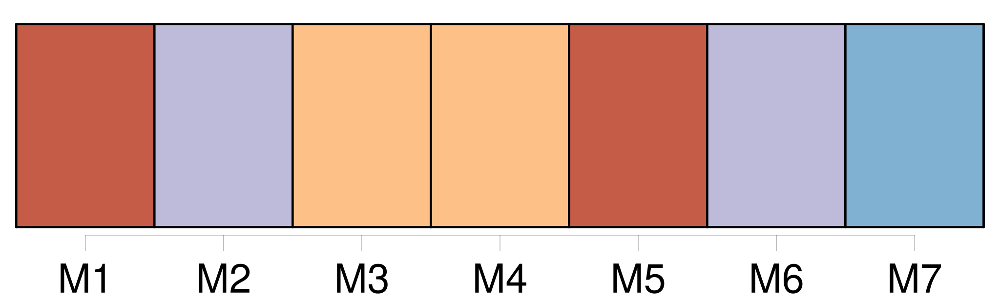

Longueur nb maillons : 58 mentions |
 |
— Le comte de Lanty eût -il dévalisé quelque Casbah, j’ épouserais bien [sa fille] !! [1 phrases] Qui n’ aurait épousé [Marianina] , jeune fille de seize ans, [dont] la beauté réalisait les fabuleuses conceptions des poètes orientaux?? Comme la fille du sultan dans le conte de la Lampe merveilleuse, [elle] aurait dû rester voilée. [Son] chant faisait pâlir les talents incomplets des Malibran, des Sontag, des Fodor, chez lesquelles une qualité dominante a toujours exclu la perfection de l’ ensemble ; tandis que [Marianina] savait unir au même degré la pureté du son, la sensibilité, la justesse du mouvement et des intonations, l’ âme et la science, la correction et le sentiment. [Cette fille] était le type de cette poésie secrète, lien commun de tous les arts, et qui fuit toujours ceux qui [la] cherchent.
Douce et modeste, instruite et spirituelle, rien ne pouvait éclipser [Marianina] si ce n’ était [sa] mère. [8 phrases]
Telle était [la comtesse de Lanty] Filippo, frère de [Marianina] , tenait, comme [sa sœur] , de la beauté merveilleuse de [la comtesse] [14 phrases] Les observateurs, ces gens qui tiennent à savoir dans quel magasin vous achetez vos candélabres, ou qui vous demandent le prix du loyer quand votre appartement leur semble beau, avaient remarqué, de loin en loin, au milieu des fêtes, des concerts, des bals, des raouts donnés par [la comtesse] , l’ apparition d’ un personnage étrange. [1 phrases]
La première fois qu’ il se montra dans l’ hôtel, ce fut pendant un concert, où il semblait avoir été attiré vers le salon par la voix enchanteresse de [Marianina] [23 phrases] Filippo, [Marianina] , madame de Lanty et un vieux domestique avaient seuls le privilége d’ aider l’ inconnu à marcher, à se lever, à s’ asseoir. [6 phrases] Mais, parfois, tout en dansant dans un quadrille, [la trop naïve Marianina] jetait un regard de terreur sur le vieillard qu’ [elle] surveillait au sein des groupes. [1 phrases] [La comtesse] tâchait de s’ en approcher, sans paraître avoir eu l’ intention de le rejoindre ; puis, en prenant des manières et une physionomie autant empreintes de servilité que de tendresse, de soumission que de despotisme, [elle] disait deux ou trois mots auxquels déférait presque toujours le vieillard, il disparaissait emmené, ou, pour mieux dire, emporté par [elle] [25 phrases] Par un des plus rares caprices de la nature, la pensée en demi-deuil qui se roulait dans ma cervelle en était sortie, [elle] se trouvait devant moi, personnifiée, vivante, [elle] avait jailli comme Minerve de la tête de Jupiter, grande et forte, [elle] avait tout à la fois cent ans et vingt-deux ans, [elle] était vivante et morte. Échappé de sa chambre, comme un fou de sa loge, le petit vieillard s’ était sans doute adroitement coulé derrière une haie de gens attentifs à la voix de [Marianina] , [qui] finissait la cavatine de Tancrède. [54 phrases] A ce bruit, [Marianina] , Filippo et madame de Lanty jetèrent les yeux sur nous, et leurs regards furent comme des éclairs. [40 phrases] Nous vîmes entrer [la jeune Marianina] , plus brillante encore par [son] expression d’ innocence que par [sa] grâce et par [sa] fraîche toilette ; [elle] marchait alors lentement, et [tenait] avec un soin maternel, avec une filiale sollicitude, le spectre habillé qui nous avait fait fuir du salon de musique ; [elle] le conduisit en le regardant avec une espèce d’ inquiétude posant lentement ses pieds débiles. [1 phrases] Là, [Marianina] frappa doucement. [1 phrases]
Avant de confier le vieillard à ce gardien mystérieux, [la jeune enfant] baisa respectueusement le cadavre ambulant, et [sa] chaste caresse ne fut pas exempte de cette câlinerie gracieuse dont le secret appartient à quelques femmes privilégiées. [1 phrases]
disait [-elle] avec les inflexions les plus jolies de [sa] jeune voix. [Elle] ajouta même sur la dernière syllabe une roulade admirablement bien exécutée, mais à voix basse, et comme pour peindre l’ effusion de [son] cœur par une expression poétique. [1 phrases] Nous entendîmes alors, grâce à un profond silence, le soupir lourd qui sortit de sa poitrine : il tira la plus belle des bagues dont ses doigts de squelette étaient chargés, et la plaça dans le sein de [Marianina]
[La jeune folle] se mit à rire, [reprit] la bague, la [glissa] par-dessus [son] gant à l’ un de [ses] doigts, et s’ [élança] vivement vers le salon, où retentirent en ce moment les préludes d’ une contredanse.
[Elle] nous aperçut. [2 phrases]
dit [-elle] en rougissant.
Après nous avoir regardés comme pour nous interroger, [elle] courut à [son] danseur avec l’ insouciante pétulance de son âge. [2 phrases] Est -ce [son] mari?? [146 phrases]
— Mais, me dit madame de Rochefide en m’ interrompant, je ne vois encore ni [Marianina] ni [son] petit vieillard. [340 phrases] — Ne saurait être, madame, que le grand-oncle de [Marianina] |

|
Il est possible de télécharger la ressource sur la page Ortolang |
Si vous avez des questions ou vous voyez des erreurs, merci d'envoyer un mail à silvia.federzoni89@gmail.com |